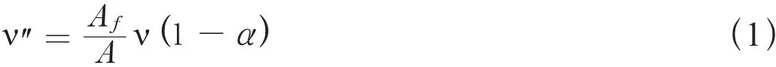
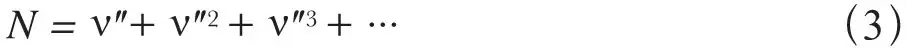
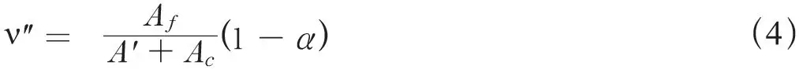

英文
英文阿德勒，冯·哈尔班
编者按
由于平均每个铀核裂变事件中大约释放3.5个中子，物理学家此时已明白链式反应是可以发生的。正如费利克斯·阿德勒和汉斯·冯·哈尔班在本文中所说的，铀样品可能会爆炸，并且会产生相当大的危险。不过他们也提出了一个控制这种反应的方法。对于包含高浓缩铀的系统，人们可以往里面注入已知的可以有效吸收中子的材料，例如镉。通过这种做法，可以将一个裂变事例触发的次级裂变的数目控制在1左右，因此整个反应可以缓慢地进行。这个建议从根本上提供了现代核反应堆中反应的“控制棒”的制作途径。 英文
最近实验表明，一个铀核在核裂变时释放[2]出的中子的数目[1]似乎高到足以使自持反应链的实现成为可能。一个含有高浓度铀的体系一旦开始链式反应就可能会爆炸，这种危险是不容忽视的。因此，提出一种可能能够控制这种链式反应发展的机制将是有益的。 英文
我们构建了一个描述链式反应行为的特征表达式：

其中Af是热中子铀核裂变截面与铀浓度的乘积；Ai是i类核的热中子吸收截面与该类核的浓度的乘积；A是所有Ai之和，此求和遍及存在于溶液中的所有类型的核；ν是一次裂变中释放出中子的平均数目，α是一个中子在被吸收前扩散到体系外的平均概率。 英文
链式反应释放的能量为：
E = NF
（2）
其中F是一次裂变释放出的能量，N是由链式反应所产生的裂变数目。我们有

于是链式反应给出了能量的值，当ν″大于1时，该值随时间的增加快速增加。让我们来考虑由热中子引发的裂变所导致的一个链式反应；即一条在含有足够用来慢化中子的氢的体系中的自持增殖链。 英文
如果所有核的俘获或裂变截面都遵循1/υ定律，那么ν″就不会依赖于中子的速度，因此也就不依赖于系统的温度（因为α实际上会是很小的，而且它首先取决于慢化中子所必需的距离；当然，温度也会产生一定的影响，尽管这种影响很小）。 英文
不过，我们可以引入一种吸收剂，比如镉，它的截面不依赖于热区的中子的能量。我们将用下面的式子来代替式（1）：

其中A′是所有遵循1/υ定律的Ai的和，而Ac是一个常数，它取决于新加入的吸收剂。此时的ν″将会随着温度的增加而减小。在系统的组成和几何常数的特征温度下，ν″会变得比1还小，而系统则会在该温度附近的某个温度下达到自稳定；平衡是由下面的事实所决定的，即单位时间内系统释放出的能量大小（以热或者核辐射的形式）等于系统产生的能量。佩兰曾经讨论过类似的问题[3]。 英文
附加说明：在热中子所导致的自持增殖链的情况中，对中子慢化和吸收所需要的时间，即中子的平均寿命，为10－4秒的数量级。如果使ν″小到1,007，就需要100倍于中子平均寿命或者说大约10–2秒的时间来使中子数量加倍，同时单位时间释放的能量也随之翻倍。于是，有可能通过利用吸收剂周期性的相互作用（它会进入系统破坏链式反应）来控制链式反应的发展。 英文
（王耀杨 翻译；张焕乔 审稿）